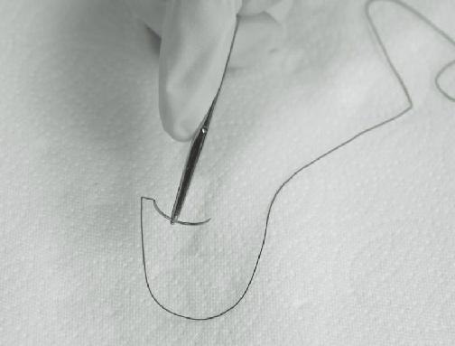
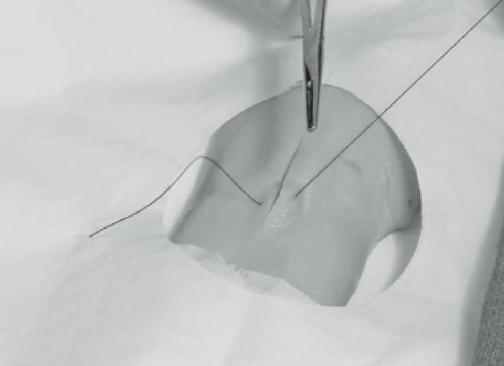
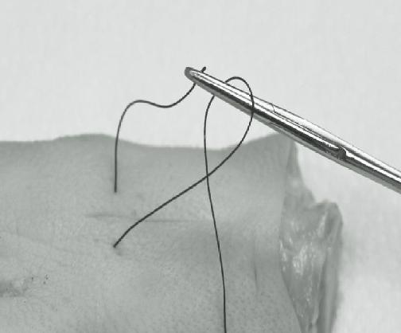
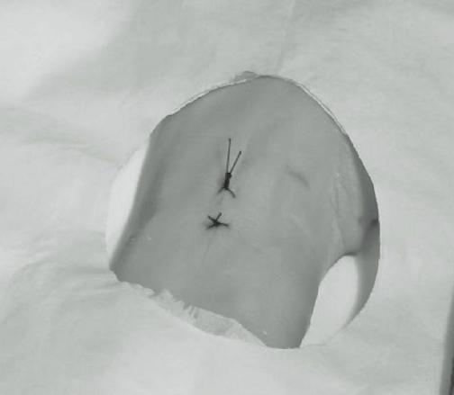
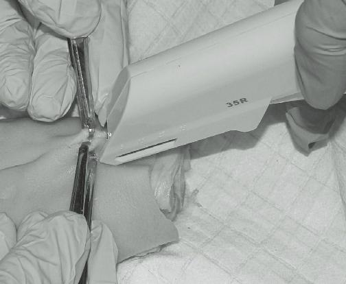
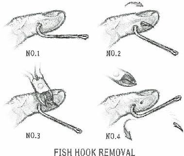
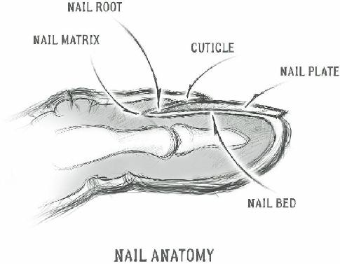
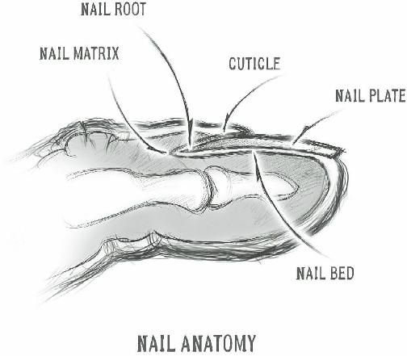
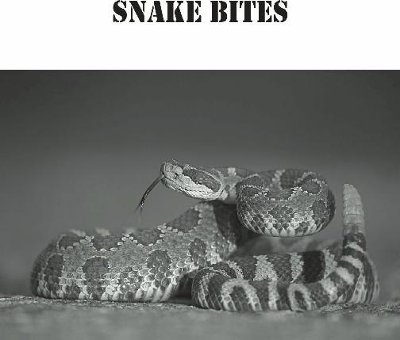
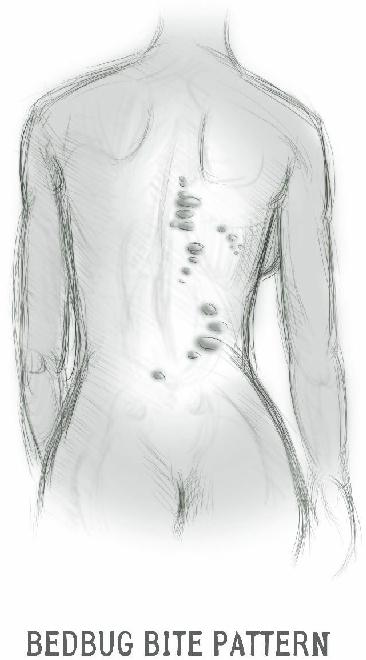

An accidental injection into a blood vessel is possibly life-threatening, causing heart irregularities and seizures.
To determine if you are in a blood vessel, pull the plunger back. This is called “aspiration”. Aspirating will draw blood into the syringe if it’s in the wrong place. If you lack Lidocaine, you can apply an ice cube to the area to be sutured until sensation decreases.
Now, open your suture package and use your needle holder instrument to grasp the needle therein. Remove it and the attached “string” from the package. Adjust the curved needle on the needle holder so that it is perpendicular to the line of the instrument. If you are holding the needle holder in your right hand, the sharp end of the needle should point to your left. The sharp end of the needle should point to the right for lefthanders. For the best command of the suture, the needle should be held at the midpoint of the curve (see figure below).

Now take your forceps (tweezers) and grasp the edge of the laceration near where you wish to place the stitch.
Insert the suture needle at a 90 degree angle to the skin and drive it through that side of the laceration with a twist of the wrist. (see figure below). The needle should enter the skin no closer than a quarter inch from the edge of the laceration, or about the width of the head of your needle driver.

Release the needle and re-clamp it on the inside of the wound and pull it through. Replace the needle on the needle holder and, going from the inside of the wound, drive the needle with a twist of the wrist through the skin on the other side of the laceration. Pull the string through, leaving a 1-2 inch length for knot-tying (see figure below).

There are various ways to tie your knot, but the method that saves the most suture material (this book is meant for collapse situations, after all), is the Instrument Tie.
This method uses multiple stitches, and is useful for those learning the procedure, as one bad stitch will not compromise the closure. Placing the needle holder over the wound, wrap the long end of the string twice over and around the end of the needle holder (see figure below). This will form what is known as a “Surgeon’s
Knot”.

Open the needle holder end slightly and carefully grab the very end of the 2-3 inch length (see figure above), then clamp and pull it through the loops tightly to form a knot (see figure below). Repeat this knot 4 or 5 times per stitch. 1 loop is fine for every knot beyond the first.

Finally, grasp the two ends and cut the remaining suture material ¼ inch from the knot with your suture scissors.
Place each subsequent suture about ½ inch apart from the previous one (see below).

It’s important to tighten your knots only enough to close the wound. Excessive pressure from a knot that is too tight will prevent healing in the area of the suture. You can easily identify sutures that are too tight: They will cause an indentation in the skin where the string is. To finish your suture job, paint it once again with Betadine solution and cover with gauze and tape. Monitor the progress of the wound closely.
To be successful in treating lacerations or other soft tissue injuries, you must be able to:
1. Decide when it is better to close a wound than leave it open.
2. Correctly place the sutures when they are indicated.
3. Provide close follow-up of the treated injury to assure complete healing, whether you have chosen to close it or leave it open.
If you can absorb this knowledge and implement it, you will have learned an important skill.

Staples vs. Sutures
The two invasive methods of closing a wound are suturing and stapling. Both expend medical supplies that are unlikely to be renewable in a power-down situation, so conserve these vital items by using less invasive steristrips, butterfly closures or surgical glues if possible. At one point or another, however, the medic will come across an injury that must be closed with sutures or staples.
For many minor wounds, suturing is the standard method of closure. Staples, however, are an acceptable alternative for skin wounds. According to scientific studies, the wounds that are best served by staple closure seem to be scalp lacerations (heal faster); the worst, injuries over joints (higher incidence of infection).
Straight-line lacerations are closed faster with staples than with sutures, which make them useful in mass casualty incidents or in circumstances where quick action must be taken. Sutures are going to be difficult to place quickly, especially by the medic who was not formally trained. If adequate wound cleaning did not occur before staple placement, however, the risk of infection is high. The staples may have to be removed, thorough irrigation performed, and the staples replaced.
For survival purposes, staples are used only on the skin, whereas sutures may be used in deeper layers.
There are staple guns for internal organs, but these procedures require special training and will have low success rates in grid-down situations.
After thoroughly irrigating the area with an antiseptic to get rid of debris, you are ready to begin. Staples are best executed if you have an assistant that can hold the skin edges together for you. As this usually requires two hands, it will be awkward for you to staple and approximate the skin at the same time. The assistant, by the way, is the skilled labor on this team. Little technical skill is actually required in placing the staple.
On the other hand, suturing can be performed by one person and requires a bit of skill to achieve a cosmetic result. The trade-off is the fact that suturing is a much slower process than stapling. Also, there is the possibility that you might stick yourself with the suture needle during the procedure.
Both sutures and staples have a place in your medical storage. Get enough of each to deal with the various injuries you’re likely to see in an austere setting.
How to Staple Skin
After thoroughly cleaning a wound and applying antiseptic to “prep” the surgical field, you are ready to use your skin stapler. You can access my YouTube video “How to Staple Skin with Dr. Bones” and follow along.
Your assistant will need two Adson’s or “rat-tooth”
forceps to hold the skin for you.
Most staplers are held in the hand the same way you would hold, say, a garden hose nozzle. Stand in a position so that you have an overhead view of the laceration to be closed. You can access my YouTube video “How to Staple Skin with Dr. Bones” to get an idea.
Your assistant then grabs the edges of the skin closest to you with the two forceps. Then, he/she will evert the edges (turn them inside out) SLIGHTLY and hold them together.

Placing the Staple
Hold your stapler at a 90 degree angle to the edges and press downward on the skin. The firmer you press, the deeper the staple. The line of the laceration should be right in the middle of the line of the stapler.
Press the “trigger” of your stapler to embed the staple and then release (completely) and retract. Check the staple placement and remove any that are not appropriately executed.
To remove staples, you will need an instrument known as a “staple remover”. This instrument is similar to office staple removers of bygone days. It looks vaguely like a small scissors, but with no sharp edges.

Removing the Staple
Place the lower “blade” of the staple remover between the healed skin and the staple. There will be two prongs on the lower blade and one on the upper. When the two prongs are under the staple, press the handles together;
the top prong will press on the staple in such a fashion that the staple is removed. Lift the staple remover and dispose of the staple safely. Repeat until all staples are removed.

T ypical broken blister
Foot Care
Anyone who has done any hiking or has bought the wrong pair of shoes has experienced a friction blister.
For a relatively small soft tissue injury, it can certainly cause more than its share of problems. More than one hike has come to a screeching halt because the terrain was more than the foot wear could handle. Never underestimate the importance of a properly-fitted pair of shoes.
Even if you’re an adult, your shoe size may change.
Shoe size changes as you age, after a pregnancy or even during the course of the day. You should always try new shoes on after a day of walking, when your feet are a little larger than other times. Most of us have one foot that’s larger than the other, so make sure your boots fit both feet (especially the larger one).
Each part of your foot should be comfortable in your new boots:
The ball of your foot should fit the widest part of the shoe without issue.
There should be about 1/2 inch or so from the end of your toes to the end of your shoe.
The upper part of the shoe should be flexible enough to not cause discomfort on your instep.
Your heel should not slip up and down when you walk.
Other considerations are important: Soles should be thick
Vibram or other sturdy material. High-cut boots will help prevent ankle sprains by giving more support and will protect against the occasional snake bite.
Don’t buy shoes that are too tight and expect them to stretch. They might, but you’ll go through a lot of discomfort to get them there. You might be used to buying shoes online, but you really should walk in a shoe first for a while before making any purchase decisions.
Your feet are shaped differently than the next guy’s, so different brands of boot might be better for different people.
Heavier boots, such as those with steel toes, are great if you’re chopping wood (you get to keep all ten of your toes) but are heavy. remember that an extra pound of weight in your boot is like 5 extra pounds of weight on your back. Getting soft, flexible uppers will help. In wet climates, waterproof materials like Gore-Tex are a good investment.
A special note: Unless you can count “shoemaker” as one of your survival skills, buy a spare pair or two now while they’re still available. Break them in.
Another factor in keeping your feet healthy is your socks. Most people hike in the same pair of socks all day, even in the heat of summer.
Sweaty feet are unhappy feet; Wetness increases friction and gives you blisters.
Change your socks often and have replacement pairs as a standard item in your backpack. Consider the use of a lighter, second pair of socks (sock liners) under the thicker hiking socks you use for additional protection.
Use foot powders, like Gold Bond, or even corn starch to help your feet stay dry.
Blisters
If a blister is just starting, it will look like a tender red area where the friction is. Cover it with moleskin or
Spenco Second Skin before it gets worse. These items are inexpensive and can be lifesavers. If you don’t have any on hand, you can make use of gauze or a Band-Aid or even duct tape. The important thing here is to add padding to remove the friction from the blister.
Most people are eager to pop their blisters, but this shouldn’t be done with small ones, as this could lead to infection. An intact blister serves as a sterile dressing.
Large blisters are different, however, as they pop by themselves easily, allowing bacteria into damaged skin.
Follow this process:
Clean the area with disinfectant. Alcohol or iodine is especially useful.
Take a needle and sterilize with alcohol or heat it till it is red hot.
Pierce the side of the blister. This allows the fluid to drain. This will ease some discomfort and also will allow healing to begin.
Preserve loose skin unless it is especially irritating.
Cover the blister to offer protection and apply antibiotic cream if possible.
Take some moleskin or Spenco Second Skin and cut a hole in the middle a little bigger than the blister.
Place the moleskin on so that the blister is in the middle of where the hole is.
Cover with a gauze pad or other bandage.
Rest if you can.
If you absolutely must keep walking, make sure that your bandage has stopped the friction to the area.
remember, bandages frequently come off, so check it from time to time to make sure it’s still on. Change the bandage frequently to maintain cleanliness.
Home Remedies for Blisters:
Apply a cold compress to the blister by soaking a cloth in salt water.
Apply a 10 percent tannic acid solution to the blister two or three times a day.
Apply a few drops of Listerine antiseptic to a broken blister to disinfect the wound. Garlic oil is also very useful for this purpose.
Place some aloe vera, vitamin E oil or zinc oxide ointment on the blister.
Witch hazel on the blister three times a day helps with pain and is also a drying agent.
Tea tree oil will help prevent infection.
Apply lavender oil to help regenerate skin several times a day.
If you don’t treat the blister and keep friction on it, there's a chance that it may turn into a foot ulcer.
Diabetics need to be especially careful, because they’re more susceptible to foot problems due to poor circulation and nerve damage. A foot ulcer is an open sore, and can become increasingly deep and even affect tendons, nerves, and bone. Infections are common. This is why prevention is so important when it comes to blisters.
Splinters
Being out in the woods or working with wood not uncommonly leaves a person with a splinter or two to deal with. You can remove a splinter by simply cutting the skin over it until the end can be grasped with a small forceps or tweezers. You’ll need as fine an instrument as you can get to make this easy. Also, a magnifying glass is very useful in this circumstance..
If you can see the entire length of the splinter, use a scalpel (#11 or #15 blade) and cut the epidermis. You want to cut superficially and just enough to expose the tip of the wooden fragment. Then, take your tweezers and grasp the end of the splinter and pull it out along the angle that it entered the skin. Don’t forget to wash the area thoroughly before and after the procedure.
It’s unlikely that a major infection will come from simply having a splinter, with the exception of those that have been under the skin for more than 2-3 days.
Redness or swelling in the area will become apparent if an infection is brewing. You might consider antibiotics in this circumstance to avoid having problems later.

Fishhooks
Even if you’re an accomplished fisherman, you will eventually wind up with a fishhook embedded in you somewhere, probably your hand. Since the hook probably has worm guts on it, start off by cleaning the area thoroughly with an antiseptic.
Your hook probably has a barbed end. If you can’t easily slide it out, the barb is probably the issue. Press down on the skin over where the barb is and then attempt to remove the hook along the curve of the shank.
If this doesn’t work, you may have to advance the fishhook further along the skin until the barbed end comes out again. At this point, you can take a wire cutter and separate the barbed end from the shank.
Then, pull the shank out from whence it came. Wash the area again and cover with a bandage. Observe carefully over time for signs of infection.
Mild injuries can sometimes be detrimental to the effective function of a member of your survival group.
Although perhaps not as life-threatening as a gunshot wound or a fractured thighbone, nail bed injuries are common; they will be more so when we are required to perform carpentry jobs or other duties that we may not be performing on a daily basis now.
Your fingernails and toenails are made up of protein and a tough substance called keratin, and are similar to the claws of animals. When we refer to issues involving nails, we refer to it as “ungual” (from the latin word for claw: unguis).

The nail consists of several parts:
The nail plate (body): this is the hard covering of the end of your finger or toe; what you normally consider to be the nail.
The nail bed: the skin directly under the nail plate. Made up of dermis and epidermis just like the rest of your skin, the superficial epidermis moves along with the nail plate as it grows. Vertical grooves attach the superficial epidermis to the deep dermis. In older people, the nail plate thins out and you can see the grooves if you look closely. Like all skin, blood vessels and nerves run through the nail bed.
The nail matrix: the portion or root at the base of the nail under the cuticle that produces new cells for the nail plate. You can see a portion of the matrix in the light half-moon (the “lunula”)
visible at the base of the nail plate. This determines the shape and thickness of the nail;
a curved matrix produces a curved nail, a flat one produces a flat nail.
In a nail “avulsion”, the nail plate is ripped away by some form of trauma. The nail may be partially or completely off, lifted up off the nail bed. Ordinarily, depending on the type of trauma, an x-ray would be performed to rule out a fracture of the digit; you won’t have this available if modern medical care is not available, but you can do this:
Numb the area by providing a digital block
(discussed earlier in this book).
Clean the nail bed thoroughly with saline solution, if available, and irrigate out any debris. Paint with Betadine (2% PovidoneIodine solution).
Cover the exposed (and very sensitive) nail bed with a non-adherent (telfa) dressing. Some add petroleum jelly as a covering. Change frequently. Avoid ordinary gauze, as it will stick tenaciously and be painful to remove.
If the nail plate is hanging on by a thread, remove it by separating it from the skin folds by using a small surgical clamp. You can consider placing the avulsed nail plate on the nail bed as a protective covering; it is dead tissue but may be the most comfortable option.
Avoid scraping off loose edges, as it may affect the nail bed’s ability to heal.
If the nail bed is lacerated, suture (if clean)
with the thinnest gauge absorbable suture available (6-0 Vicryl is good). Be sure to remove any nail plate tissue over the laceration so the suture repair will be complete.
Place a fingertip dressing. Some will immobilize the digit with a finger splint to protect it from further damage.
Begin a course of antibiotics if the nail bed is contaminated with debris, etc.

In some crush injuries, such as striking the nail plate with a hammer, a bruise (also called an “ecchymosis”)
or a collection of blood may form underneath (a
“hematoma”). A bruise will be painful, but the pain should subside within an hour or two. A hematoma, however, will continue to be painful even several hours after the event. A bruise will likely appear brownish or blue, but a hematoma may appear a deep blue-black.
For a bruised nail, little needs to be done other than given oral pain relief, such as Ibuprofen. For a significant hematoma, however, some suggest a further procedure called “trephination”. In this instance, a very fine drill (or a hot 18 gauge needle or paper clip) is used to make a hole in the nail plate. This must be large enough to relieve pressure from the blood that has collected under the nail. It should not be too painful if you don’t go too far in.
This procedure should not be performed unless absolutely necessary, as the pain will eventually decrease over time by itself. If you go too deep through the nail, you may further injure the nail bed. The finger must be kept dry, splinted and bandaged for a minimum of 48 hours afterwards.

It’s important to know that damage to the base of the nail (the germinal matrix) may be difficult to completely repair, and that future nail growth may be deformed in some way. In situations where modern medical care is available, a hand surgeon is often called in to give the injury the best chance to heal appropriately. Even then, a higher incidence of issues such as “ingrown” nails may occur. A completely torn-off nail will take 4-5 months to grow back.

If we find ourselves off the power grid, we will be cooking out in the open more frequently. The potential for significant burn injuries will rise exponentially, especially if the survival group includes small children;
naturally curious, they may get too close to our campfires. A working knowledge of burns and their treatment will be a standard skill for every group’s medical provider.
The severity of the burn injury depends on the percentage of the total body surface that is burned, and on the degree (depth) of the burn injury. Although assessing the surface percentage is helpful to burn units in major hospitals, this practice will likely be of limited helpfulness in a collapse.
Before we discuss the different degrees of burn you might encounter, preventative measures should be put forth. Most burns you’ll see will be due to too much exposure to the sun. To avoid sunburn:
Do not sunbathe (a tan is NOT healthy).
Avoid peak sun hours (say, 11am-4pm).
Wear long pants and sleeves, hats, and sunglasses.
Spend some time in the shade.
If you cannot avoid extended exposure to sunlight, be certain to apply a sunblock. They should be applied prior to going outside and frequently throughout the day. Even water resistant/proof sunscreens should be reapplied every 1-2 hours. Most people fail to put enough on their skin; be generous in your application.
By the way, a sunblock and a sunscreen are not the same thing. Sunblocks contain tiny particles that “block”
and reflect UV light. A sunscreen contains substances that absorb UV light, thus preventing it from penetrating the skin. Many commercial products contain both.
The SPF (Sun Protection Factor) rating system was developed in 1962 to measure the capacity of a product to block UV radiation. It measures the length of time your skin will be protected from burning.
A SPF (sun protection factor) of at least 15 is recommended. It takes about 20 minutes without sunscreen for your skin to turn red. A product that is
SPF 15 should delay burning by a factor of 15, or about
5 hours or so. Higher SPF ratings give more protection, and might be beneficial to those with fair skin.
Besides the sun, injuries will most likely be related to cooking, especially by campfire. Using hand protection will prevent many of these burns, as will careful supervision of children near any cooking area. Now, let’s concentrate on learning to identify burns by their degree:
First Degree Burns
These burns will be very common, such as simple sunburn. The injury will appear red, warm and dry, and will be painful to the touch. These burns frequently affect large areas of the torso; immersion in a cool bath is a good idea or at least running cool water over the injury.
Placing a cool moist cloth or Spenco Second Skin on the area will give some relief, as will common antiinflammatory medicines such as Ibuprofen. Aloe Vera or
Zinc Oxide cream is also an effective treatment.
Usually, the discomfort improves after 24 hours or so, as only the superficial skin layer, the epidermis, is affected. Avoid tight clothing and try to wear light fabrics, such as cotton.
Second-Degree Burns
These burns are deeper, going partially through the skin, and will be seen to be moist and have blisters with reddened bases. The area will have a tendency to weep clear or whitish fluid. The area will appear slightly swollen, so remove rings and bracelets.
To treat second degrees burns:
Run cool water over the injury for 10-15 minutes (avoid ice).
Apply moist skin dressings such as Spenco
Second skin.
Give oral pain relief such as Ibuprofen.
Apply anesthetic ointment such as Benzocaine.
Use Silver Sulfadiazine (Silvadene) creams to help prevent infection.
Consider antibiotic ointment if slow to heal.
Lance only large blisters
Avoid removing burned skin.
A personal aside: I had a significant second degree burn as a child (they called it “sun poisoning” back then) and my little brother thought it was a good idea to peel off some skin. He ended up with a 10 inch x 2 inch strip of skin in his hands. Don’t peel off skin from a second degree burn.
Third-Degree Burns
The worst type of burn injury; it involves the full thickness of skin and possibly deeper structures such as subcutaneous fat and muscle. It may appear charred, or be white in color. The burn may appear indented if significant tissue has been lost.
Third-degree burns will cause dehydration, so giving fluids is essential to keep the patient stable. Spenco
Second Skin is, again, useful, as a burn wound cover, for protection purposes.
Celox combat gauze, when wet, forms a gel-like dressing that may provide a helpful barrier. Silver
Sulfadiazine (Silvadene) cream is helpful in preventing infections in third degree burns. You might see fourth, fifth and sixth degree burns described in some other medical resource books. They would be treated the same as third degree burns in a long-term survival scenario.
Any burn this severe that is larger than, say, an inch or so in diameter, usually requires a skin graft to heal completely. Unfortunately, the capacity for such restorative surgery is unlikely to be available. A person with third-degree burns over more than 10% of the body surface could be go into shock, and is in a lifethreatening situation.
When a person gets burned, it’s of paramount importance to remove the heat source immediately. Run cool water over any degree of burn for at least 10-15 minutes as soon as possible after the injury. Cool water is preferable to ice as it is less traumatic to the already damaged tissue. Again, be certain to remove rings or jewelry, as swelling is commonly seen in these kinds of injuries.
Natural Burn Remedies
It’s important to realize that our traditional medicine resources may not be available some day and a successful medic will ensure that everyone will have some knowledge regarding alternate burn treatments.
Various plants will have properties that will allow you to improve burn healing, even if no modern medical supplies are available. Although of limited use for severe burns, many first and second degree burns will respond to their effects.
The first remedy is Aloe Vera. Studies have shown that Aloe Vera helps new skin cells form and speeds healing. This would be an excellent option for first or second degree burns. If you have an aloe plant, cut off a leaf, open it up and either scoop out the gel or rub the open leaf directly on the burned area. Reapply 4-6 times daily, with or without a bandage covering. Simplicity and fast relief are the key benefits to using Aloe Vera on burns.
Many articles you can find on burn treatments commonly include vinegar (any type) as a treatment for burns. Vinegar works as an astringent and antiseptic and helps to prevent infections. The best way to use vinegar on smaller sized burns is to make a compress with 1/2 vinegar and 1/2 cool water and cover the burn until the compress feels warm, then re-soak the compress and reapply. There is no limit to how many times you can apply the vinegar soaks.
A similar method is adding vinegar to a cool bath.
Start with tepid water and let the water cool off while the patient is soaking. If the burn is on the central body area, use a cotton t-shirt soaked in vinegar and then wring it out. This treatment is especially useful as help your patient sleep.
Another “cooling off” treatment for burns is the
Witch Hazel compress. Use the extract of the bark, which decreases inflammation and soothes a 1st degree burn. Soak a compress in full strength Witch Hazel and apply to the burned area. Reapply as frequently as desired.
Elder flower and comfrey leaf “decoctions” are also an excellent remedy for burns. For those unfamiliar with the term decoction, it is an extraction of the crushed herbs produced by boiling. Using lower water temperatures produces a tea instead. The decoctions of these plants can also be used for compresses just like the
Witch Hazel. However, they can also be freshly crushed and rehydrated and then applied directly to the burned area with a sterile gauze cover. We refer to this as a
“poultice”.
Black tea leaves have tannic acid that helps draw heat from a burn. There are several ways to implement the black tea treatment:
Put 2-3 tea bags in cool water for a few minutes and use the water with compresses or just apply the liquid to the burned area.
Make a concoction of 3 or 4 tea bags, 2 cups fresh mint leaves and 4 cups of boiling water.
Then strain the liquid into a jar and allow it to cool. To use, dab the mixture on burned skin with a cotton ball or washcloth.
If your patient has to be mobile, make a stayin-place poultice out of 2 or 3 wet tea bags.
Simply place cool wet tea bags directly on the burn and wrap them with a piece of gauze and some tape to hold them in place.
Both milk and yogurt have also been found to help cool and hydrate the skin after a burn. Wrap whole-milk, fullfat yogurt, inside gauze or cheesecloth and use as a compress. Replace the compress as the yogurt warms on the skin. Whole milk compresses can be used the same way.
Another method of application for large burn injuries is a yogurt “spa treatment” which involves spreading yogurt all over the burn then bathing with cool water after 15 minutes.
Yet another home remedy is the baking soda bath.
Add 1/4 cup baking soda to a warm bath and soak for at least 15 minutes or longer if needed until the water cools off.
There are two essential oils that can be used on 1st or 2nd degree burns: Lavender and tea tree oils. They help with pain due to stinging and promote tissue healing. Mix tea tree oil with a small amount of water, or lavender can be used full strength; apply all over the burned area. A loose covering of gauze over the oil may be helpful when used for 2nd degree burns.
It is important to know that butter or lard, commonly used for burns in the past, will hold in the heat and are not to be used in the treatment of your patient.
You can also make a poultice of marigold (calendula)
petals pounded with small amounts of olive or wheat germ oil; this can be spread lightly over the burned area and covered by loose gauze or a sterile covering.
Marigold is a common ingredient in skin medications, and it has been proven to have anti-inflammatory and antibacterial effects.
An oatmeal bath may be used to reduce itching related to healing, Crumble 1-2 cups of raw oats and add them to a lukewarm bath as the tub is filling and soak
15-20 minutes. Then, air dry so that a thin coating of oatmeal remains on your skin. You can do this as often as needed to reduce itching.
A time proven remedy related to Ancient Indian healing arts has been used for many centuries to treat even severe burns. Here are the steps to make cottonash paste:
Take a large piece of cotton wool; or any kind of pure white cotton fabric and burn it into ashes in a Dutch oven.
Use the ASH of the burned cotton and mix with olive oil or any kind of cooking oil available
Mix this into a thick paste and spread the black paste on the burned skin
Cover it with ordinary plastic cling wrap and perhaps some gauze to hold it all in place.
Add new paste every day for a week or so, depending on the severity of the burn.
One of the best natural remedies that is useful in treating the burn patient is honey. Honey is best to use in its raw unprocessed state because of its antibacterial activity and hydrating properties. Honey has an acidic pH that is inhospitable to bacteria. Therefore, it will help prevent and even treat infections in many wounds. It can be used in 1st, 2nd and, if no other medical care is available, as a last resort for 3rd degree burns.
This is how to use the honey method:
Immediately after the first 15 minute coolingdown treatment, apply a generous amount of honey in a thick layer all over the burned area
Cover the honey with cling wrap plastic or waterproof dressings. Use tape to hold the dressing in place.
If the dressing begins to fill up with fluid oozing out of the wound, change the dressing.
The worse the burn, the more frequently the dressing will need to be changed. Repeat for 710 days.
Do not remove or wash off the honey for the first 20 days (or earlier if healing is complete).
Add more honey often and fill up any deeper areas as needed. Always have a thick layer of honey extending over the edges of the burn.
You do not want any air getting to the burned skin until healing is completed. This will cut down the infection rate.
Change the dressing at least three times a day regardless of the amount of oozing fluid.
Treating burns without a medical system available will require intense care and close observation. Severe fluid losses lead to dangerous consequences for these patients, so always be certain that you do everything possible to keep them well hydrated. The damage to the skin caused by burns leaves those injured to the mercy of many pathogens, so watch for fevers or other signs of infection.
Most people have, at some time of their life, run afoul of an ornery dog or cat. Most animal bites will be puncture wounds; these will be relatively small but have the potential to cause dangerous infections. In the United
States, there are millions of animal bites every year.
Most animal bites affect the hands (in adults) and the face, head, and neck (in children).
Domestic pets, such as cats, dogs, and small rodents are the culprits in the grand majority of cases. Dog bites, the most common, are usually more superficial than cat bites, as their teeth are relatively dull compared to felines. Despite this, their jaws are powerful and can inflict crush injuries to soft tissues. Cats’ teeth are thin and sharp, and puncture wounds tend to be deeper. Both can lead to infection if ignored, but cat bites inject bacteria into deeper tissues and seem to become contaminated more often.
Besides the trauma associated with the actual bite, various animals carry disease which can be transmitted to humans. Here are just a few diseases and the animals involved:
Rabies: Viral disease spread by raccoons, skunks, bats, opossums, and canines.
Plague: Bacterial disease associated with rats and fleas.
Tuberculosis: Bacterial disease associated with deer, elk, and bison.
Brucella: Bacterial disease associated with bison, deer, and other animals.
Hantavirus: Viral disease caused by mice.
Baylisascaris (raccoon roundworm): Parasitic disease associated with raccoons.
Histoplasma: Fungal disease associated with bat excrement (guano).
Tularemia: Bacterial disease associated with wildlife especially rodents, rabbits, and hares.
In addition, it is possible to develop tetanus from any animal bite. Tetanus is a potentially fatal infection of the muscles and nervous system caused by the bacteria
Clostridia Tetani. It is discussed elsewhere in this book.
Those at highest risk from the above list of illnesses are the following:
Those over 50 years of age
Diabetics
People with liver disease
Those with weakened immune systems
(transplant, chemotherapy, HIV/AIDS patients)
People who take steroids
Those with poor circulation
People who have had their spleen removed
Whenever a person has been bitten, the first and most important action is to put on gloves and clean the wound thoroughly with soap and water. Flushing the wound with an irrigation syringe will help remove dirt and bacteria-containing saliva.
Benzalkonium Chloride (BZK) is the best antiseptic to use in treating animal bites, because it has some effect against the Rabies virus. Be sure to control any bleeding with direct pressure (for more information, see the section on hemorrhagic wounds).
Any animal bite should be considered a “dirty”
wound and should not be taped, sutured, or stapled shut.
If the bite is on the hand, any rings or bracelets should be taken off; if swelling occurs, they may be very difficult to remove afterwards
Frequent cleansing is the best treatment for a recovering bite wound. Apply antibiotic ointment to the area and be sure to watch for signs of infection. You may see redness, swelling or oozing. In many instance, the site might feel unusually warm to the touch.
Oral antibiotics may be appropriate treatment
(especially after a cat bite): Clindamycin (veterinary equivalent: Fish-Cin) 300mg orally every 6 hours and
Ciprofloxacin (Fish-Flox) 500 mg every 12 hours in combination would be a good choice, but Azithromycin and Ampicillin-Sulbactam are also options. A tetanus shot is indicated in those who haven’t been vaccinated in the last five years.
Children who suffer animal bites may develop a form of Post-traumatic Stress Syndrome (discussed later in this book) from the experience and may require counseling.
Rabies is a dangerous but, luckily, uncommon disease that can be transmitted by an animal bite.
The grand majority of cases are found in underdeveloped countries. In the United Kingdom, rabies is almost unheard of, although there has been a report or two of infection from bat bites in 2012.
Although the classic example is the rabid dog, cat bites are the most common cause among domesticated animals. Wildlife, however, accounts for the grand majority of cases in the United States. Raccoons, opossums, skunks, coyotes, and bats are the most common vectors. It is estimated that 40,000 persons in the United States receive a rabies prevention treatment after exposure every year.
In the United States, there has never been a rabies case transmitted to humans by the following animals:
domestic cattle squirrels rabbits rats sheep horses
A person with rabies is usually symptom-free for a time which varies in each case (average 30 days or so). The patient will begin to complain of fatigue, fever, headache, loss of appetite, and fatigue. The site of the bite wound may be itchy or numb. A few days later, evidence of nerve damage appears in the form of irritability, disorientation, hallucination, seizures, and eventually, paralysis. The victim may go into a coma or suffer cardiac or respiratory arrest.
Once a person develops the disease, it is usually fatal.
Vaccinations are available to prevent the disease.
Regardless of your general opinion regarding them, it might be something to consider (especially if you work with animals as an occupation).
It is important to remember that humans are animals, and you might see bites from this source as well.
Approximately 10-15% of human bites become infected, due to the fact that there are over 100 million bacteria per milliliter in saliva.
Although it would be extraordinarily rare to get rabies as a result of a human bite, transmission of hepatitis, tetanus, herpes, syphilis, and even HIV if possible. Treat as you would any contaminated wound.
Be especially certain not to close puncture wounds from bites, as they would likely become infected if you do.

In a grid-down scenario, you will find yourself out in the woods a lot more frequently, gathering firewood, hunting, and foraging for edible wild plants. As such, we will likely encounter a snake or two. Most snakes aren’t poisonous, but even non-venomous snake bites have potential for infection.
Poison is, perhaps, the wrong word to use here;
venoms and poisons are not the same thing. Poisons are absorbed by the skin or digestive system, but venoms must enter the tissues or blood directly. Therefore, it is usually not dangerous to drink snake venom unless you have, say, a cut in your mouth (don’t try it, though).
North America has two kinds of venomous snakes:
The pit vipers (rattlesnakes, water moccasins) and
Elapids (coral snakes). One or more of these snakes can be found almost everywhere in the continental U.S. A member of another viper family, the common adder, is the only venomous snake in Britain, but it and other adders are common throughout Europe (except for
Ireland, thanks to St. Patrick).
These snakes generally have hollow fangs through which they deliver venom. Snakes are most active during the warmer months and, therefore, most bite injuries are seen then. Not every bite from a venomous snake transfers its poison to the victim; 25-30% of these bites will show no ill effects. This probably has to do with the duration of time the snake has its fangs in its victim.
An ounce of prevention, they say, is worth a pound of cure. Be sure to wear good solid high-top boots and long pants when hiking in the wilderness. Treading heavily creates ground vibrations and noise, which will often cause snakes to hit the road. Snakes have no outer ear, so they “hear” ground vibrations better than those in the air caused by, for instance, shouting.
Many snakes are active at night, especially in warm weather. Some activities of daily survival, such as gathering firewood, are inadvisable without a good light source. In the wilderness, it’s important to look where you’re putting your hands and feet. Be especially careful around areas where snakes might like to hide, such as hollow logs, under rocks, or in old shelters. Wearing heavy gloves would be a reasonable precaution.
A snake doesn’t always slither away after it bites you. It’s likely that it still has more venom that it can inject, so move out of its territory or abolish the threat in any way you can. Killing the snake, however, may not render it harmless: it can reflexively bite for a period of time, even if its head has been severed from its body.
Snake bites that cause a burning pain immediately are likely to have venom in them. Swelling at the site may begin as soon as five minutes afterwards, and may travel up the affected area. Pit viper bites tend to cause bruising and blisters at the site of the wound. Numbness may be noted in the area bitten, or perhaps on the lips or face. Some victims describe a metallic or other strange taste in their mouths.
With pit vipers, bruising is not uncommon and a serious bite might start to cause spontaneous bleeding from the nose or gums. Coral snake bites, however, will cause mental and nerve issues such as twitching, confusion and slurred speech. Later, nerve damage may cause difficulty with swallowing and breathing, followed by total paralysis.
Coral snakes appear very similar to their look-alike, the non-venomous king snake. They both have red, yellow and black bands and are commonly confused with each other. The old saying goes: “red touches yellow, kill a fellow; red touches black, venom it lacks”.
This adage only applies to coral snakes in North
America, however.
Coral snakes are not as aggressive as pit vipers and will prefer fleeing to attacking. Once they bite you, however, they tend to hold on; Pit vipers prefer to bite and let go quickly. Unlike coral snakes, pit vipers may not relinquish their territory to you, so prepare to possibly be bitten again.
The treatment for a venomous snake bite is “Antivenin”, an animal or human serum with antibodies capable of neutralizing a specific biological toxin. This product will probably be unavailable in a long-term survival situation.
The following strategy, therefore, will be useful:
Keep the victim calm. Stress increases blood flow, thereby endangering the patient by speeding the venom into the system.
Stop all movement of the injured extremity.
Movement will move the venom into the circulation faster, so do your best to keep the limb still.
Clean the wound thoroughly to remove any venom that isn’t deep in the wound, and
Remove rings and bracelets from an affected extremity. Swelling is likely to occur.
Position the extremity below the level of the heart; this also slows the transport of venom.
Wrap with compression bandages as you would an orthopedic injury, but continue it further up the limb than usual. Bandaging begins two to four inches above the bite
(towards the heart), winding around and moving up, then back down over the bite and past it towards the hand or foot.
Keep the wrapping about as tight as when dressing a sprained ankle. If it is too tight, the patient will reflexively move the limb, and move the venom around.
Do not use tourniquets, which will do more harm than good.
Draw a circle, if possible, around the affected area. As time progresses, you will see improvement or worsening at the site more clearly. This is a useful strategy to follow any local reaction or infection.
The limb should then be rested, and perhaps immobilized with a splint or sling. The less movement there is, the better. Keep the patient on bed rest, with the bite site lower than the heart for 24-48 hours. This strategy also works for bites from venomous lizards, like Gila monsters.
It is no longer recommended to make an incision and try to suck out the venom with your mouth. If done more than 3 minutes after the actual bite, it would remove perhaps 1/1000 of the venom and could cause damage or infection to the bitten area. A Sawyer
Extractor (a syringe with a suction cup) is more modern, but is also fairly ineffective in eliminating more than a small amount of the venom. These methods fail, mostly, due to the speed at which the venom is absorbed.
Interestingly, snake bites cause less infections than bites from, say, cats, dogs, or humans. As such, antibiotics are used less often in these cases.

Southern Black Widow Spider
In a survival scenario, you will see a million insects for every snake; so many, indeed, that you can expect to regularly get bitten by them. Insect bites usually cause pain with local redness, itching, and swelling but are rarely life-threatening.
The exceptions are black widow spiders, brown recluse spiders, and various caterpillars and scorpions.
Many of these bites can inject toxins that could cause serious damage. Of course, we are talking about the bite itself, not disease that may be passed on by the insect.
We will discuss that subject in the section on mosquitoborne illness.
Bee/Wasp Stings
Stinging insects can be annoyances, but for up to 3% of the population, they can be life-threatening. In the United
States,
40-50 deaths a year are caused by hypersensitivity reactions.
For most victims, the offender will be a bee, wasp or hornet. A bee will leave its stinger in the victim, but wasps take their stingers with them and can sting again.
Even though you won’t get stung again by the same bee, they send out a scent that informs nearby bees that an attack is underway. This is especially true with
Africanized bees, which are more aggressive than native bees. As such, you should leave the area whether the culprit was a bee, wasp or hornet.
The best way to reduce any reaction to bee venom is to remove the bee stinger as quickly as possible. Pull it out with tweezers or, if possible, scrape it out with your fingernail. The venom sac of a bee should not be manipulated as it will inject more irritant into the victim.
The longer bee stingers are allowed to remain in the body, the higher chance for a severe reaction.
Most bee and wasp stings heal with little or no treatment. For those that experience only local reactions, the following actions will be sufficient:
Clean the area thoroughly.
Remove the stinger if visible.
Place cold packs and anesthetic ointments to relieve discomfort and local swelling.
Control itching and redness with oral antihistamines such as Benadryl or Claritin.
Give Acetaminophen or ibuprofen to reduce discomfort.
Apply antibiotic ointments to prevent infection.
Topical essential oils may be applied (after removing the stinger)
with beneficial effect.
Use
Lavadin, helichrysum, tea tree or peppermint oil, applying 1 or 2 drops to the affected area, 3 times a day. A baking soda paste (baking soda mixed with a small amount of water)
may be useful when applied to a sting wound.
Although most of these injuries are relatively minor, there are quite a few people who are allergic to the toxins in the stings. Some are so allergic that they will have what is called an “anaphylactic reaction”. Instead of just local symptoms like rashes and itching, they will experience dizziness, difficulty breathing and/or faintness. Severe swelling is seen in some, which can be life-threatening if it closes the person’s airways.
Those experiencing an anaphylactic reaction will require treatment with epinephrine as well as antihistamines. People who are aware that they are highly allergic to stings should carry antihistamines and epinephrine on their person whenever they go outside.
Epinephrine is available in a pre-measured dose cartridge known as the Epi-Pen (there is a pediatric version, as well). The Epi-pen is a prescription medication, but few doctors would begrudge a request for one. Make sure to make them aware that you will be outside and may be exposed to possible causes of anaphylaxis. As a matter of fact, it may be wise to have several Epi-Pens in your possession. See the section on allergic reactions for a more in-depth discussion.
Spider bites
Although large spiders, such as tarantulas, cause painful bites, most spider bites don’t even break the skin. In temperate climates, two spiders are to be especially feared: The black widow and the brown recluse.
The black widow spider is about ½ inch long and is active mostly at night. They rarely invade your home, but can be found in outbuildings like barns and garages.
Southern black widows have a red hourglass pattern on their backs, but other sub-species may not. Although its bite has very potent venom damaging to the nervous system, the effects on each individual are quite variable.
A black widow bite will appear red and raised and you may see 2 small puncture marks at the site of the wound. Severe pain at the site is usually the first symptom soon after the bite. Following this, you might see:
Muscle cramps
Abdominal pain
Weakness
Shakiness
Nausea and vomiting
Fainting
Chest pain
Difficulty breathing
Disorientation
Each person will present with a variable combination and degree of the above symptoms. The very young and the elderly are more seriously affected than most. In you exam, you can expect rises in both heart rate and blood pressure.
The brown recluse spider is, well, brown, and has legs about an inch long. Unlike most spiders, it only has
6 eyes instead of 8, but they are so small it is difficult to identify them from this characteristic.
Victims of brown recluse bites report them to be painless at first, but then may experience these symptoms:
Itching
Pain, sometimes severe, after several hours
Fever
Nausea and vomiting
Blisters
The venom of the brown recluse is thought to be more potent than a rattlesnake’s, although much less is injected in its bite. Substances in the venom disrupt soft tissue, which leads to local breakdown of blood vessels, skin, and fat. This process, seen in severe cases, leads to “necrosis”, or death of tissues immediately surrounding the bite. Areas affected may be extensive.
Once bitten, the human body activates its immune response as a result, and can go haywire, destroying red blood cells and kidney tissue, and hampering the ability of blood to clot appropriately. These effects can lead to coma and, eventually death. Almost all deaths from brown recluse bites are recorded in children.
The treatment for spider bites includes:
Washing the area of the bite thoroughly
Applying ice to painful and swollen areas
Pain medications such as acetaminophen/Tylenol
Enforcing bed rest
Warm baths for those with muscle cramps
(black widow bites only; stay away from applying heat to the area with brown recluse bites)
Antibiotics to prevent secondary bacterial infection
Home remedies include making a paste out of baking soda or aspirin and applying it to the wound. The same method, using olive oil and turmeric in combination, is a time-honored tradition. Dried basil has also been suggested; crush between your fingers until it becomes a fine dust, then apply to the bite. One naturopath uses
Echinacea and Vitamin C to speed the healing process.
Be aware that these methods may be variable in their effect from patient to patient.
There are various devices and kits available that purport to remove venom from bite wounds.
Unfortunately, these suction devices are generally ineffective in removing venom from wounds.
Tourniquets are also not recommended and may be dangerous. Although antidotes known as “antivenins”
(discussed in the section on snakebite) exist and may be life-saving for venomous spider and scorpion stings, these will be scarce in the aftermath of a major disaster.
Luckily, most cases that are not severe will subside over the course of a few days, but the sickest patients will be nearly untreatable without the antivenin.
Scorpion Stings
Most scorpions are harmless; in the United States, only the bark scorpion of the Southwest desert has toxins that can cause severe symptoms. In other areas of the world, however, a scorpion sting may be lethal. In the
U.S., 17,000 scorpion stings were treated in emergency rooms in 2009.
Some scorpions may reach several inches long; they have eight legs and pincers, and inject venom through their “tail”. They are most commonly active at night.
Interestingly, scorpion exoskeletons somewhat fluorescent under ultraviolet light; you can find them most easily at night by using a “black light”.
The nervous system is most often affected from a scorpion sting. Children are most at risk for major complications. Symptoms you may see in victims of scorpion stings may include:
Pain, numbness, and/or tingling in the area of the sting
Sweating
Weakness
Increased saliva output
Restlessness or twitching
Irritability
Difficulty swallowing
Rapid breathing and heart rate
When you have diagnosed a scorpion sting, do the following:
Wash the area with soap and water.
Remove jewelry from affected limb (swelling may occur)
Apply cold compresses to decrease pain.
Give an antihistamine, such as diphenhydramine (Benadryl)
If done quickly, this may slow the venom’s spread.
Keep your patient calm to slow down the spread of venom.
Limit food intake if throat is swollen.
Give pain relievers such as Ibuprofen or
Acetaminophen, but avoid narcotics, as they may suppress breathing.
Don’t cut in the wound or use suction to attempt to remove venom.
Although not likely available in an austere environment, an antivenin is now available that eliminates symptoms in children (the group most severely affected) after four hours.
Fire Ant Stings and Bites
Fire ants are about ¼ inch in length and can be red or black. If their nest is disturbed, it triggers a mass attack of, sometimes, thousands of colony members. The ants bite with their jaws and have a rear-end stinger that they can use multiple times. Hypersensitivity to fire ants causes about 80 deaths a year in the Southeastern U.S.
If you are attacked by fire ants, do the following:
Brush them away with your hands (although it may be difficult if they have clamped their jaws into you).
Move away from the mound.
Remove clothes if they may have gotten inside them.
Elevate the bitten extremity to reduce swelling.
Place a cool compress on the area.
Take antihistamines such as diphenhydramine
(Benadryl) or apply hydrocortisone cream.
If a blister develops, don’t pop it. It will usually not get infected if it stays intact.
If a blister pops, wash with soap and water.
Consider antibiotics, such as Amoxicillin, if the wounds appear to worsen with time.
Bedbugs

Of all the creepy-crawlies that raise an alarm in a household, few are worse than bed bugs. Although poor standards of living and unsanitary conditions have been associated with bed bug infestations, even the cleanest house in the most developed country can harbor these parasites.
Bed bugs were once so common that every house in many urban areas was thought to harbor them in the early 20th century; they declined with the advent of modern pesticides like DDT, but a resurgence of these creatures has been noted in North America, Europe, and even Australia over the last decade or so. Cities such as
New York and London have seen 5 times as many cases reported over the last few years. This may have to do with the restriction of DDT-like pesticide. On the other hand, the general over-use of pesticides may be leading to resistance.
The common bed bug (Cimex Lectularius) is a small wingless insect that is thought to have originated in caves where both bats and humans made their homes.
Ancient Greeks, such as Aristotle, mention them in their writings. They were such a serious issue during WWII that Zyklon, a Hydrogen Cyanide gas infamously used in
Nazi concentration camps, was implemented by both sides to get rid of infestations.
There are a number of species of bed bug that are found in differing climates. Unlike lice, bed bugs are not always species-specific (exclusive to humans). For example, Cimex hemipterus, a bed bug found in tropical regions, infests poultry and bats as well as humans.
Adult bed bugs are light to medium brown and have oval, flat bodies about 4mm long (slightly more after eating). Juveniles are called “nymphs” and are lighter in color, almost translucent. There are several nymph stages before adulthood; to progress to adulthood, a meal of blood (yours!) is necessary.
Bed bugs, which are mostly (but not exclusively)
active at night, bite the exposed skin of sleeping humans to feed on their blood; they then retreat to hiding places in seams of mattresses, linens, and furniture. Their bites are usually painless, but later on, itchy raised welts on the skin may develop. The severity of the response varies from person to person.

Bed bugs can make you miserable and have been known to harbor other disease-causing organisms, but there have not been, as yet, cases of illness specifically caused by them. This is in contrast to body lice or fleas, which has been associated with outbreaks of Typhus,
Relapsing fever, and even Plague.
Strangely, bed bugs don’t like to live in your clothes, like body lice, or on your skin or hair, like fleas. They apparently don’t care much for heat, and prefer to spend more time in your backpack or luggage than your underarm.
Many confuse the bites of bed bugs with mosquitos or fleas. Most flea bites will appear around the ankles, while bed bugs will bite any area of skin exposed during the night. Flea bites often have a characteristic central red spot. Bed bug bites may resemble mosquito bites;
bed bugs, however, tend to bite multiple times in a straight line. This has been referred as the classic
“breakfast, lunch, and dinner” pattern.
The most common treatment for bed bug bites is hydrocortisone cream to treat inflammation and the use of diphenhydramine (Benadryl) for allergic symptoms and itching. The cure, however, is to eradicate the bed bug from your shelter or camp; that’s a little harder to do.
First, find their nests: Look at every seam in your mattress, linens, backpacks, and furniture. Bed bugs will also hide in joints in the wooden parts of headboards and baseboards. You will usually find bed bug “families” of various ages, along with brown fecal markings and, perhaps, even small amounts of dried blood.
Most people, once bed bugs are identified, will immediately want to treat with chemicals. Pesticides in the pyrethroid family and Malathion have been found to be effective. Propoxur, an insecticide, is highly toxic to bed bugs as well, but is not approved for indoor use in the U.S. due to health risks.
If you use chemicals, be sure you cover all areas on the bed, including the frame and slats. Expect several treatments to be required to eliminate the infestation;
repeat at least once about 10 days after the initial treatment.
Those concerned with the over-use of pesticides or with lack of availability, as in a long term survival situation, could consider using natural predators, but this is highly impractical, as the bed bug predator list consists of everything else you don’t want in your shelter: ants, spiders, cockroaches, and mites.
One reasonable option is the use of bedding covers.
These are impervious sheets or padding that, essentially, trap bed bugs inside your mattress until they starve. If they can’t reach you to get a meal of blood, they will eventually die out. This method (known as “encasing”)
is the least risky, as it doesn’t involve the use of chemicals.
If you have electricity, make sure to place all bedding and clothes in a hot dryer for, say, an hour.
Usually, washing clothes alone will not kill bed bugs although hot, soapy water over 125 degrees Fahrenheit may work. This strategy, by the way, includes your backpack when you return from a trip out of town or an extended foraging patrol. Extreme cold is also considered an effective treatment. If you live far enough north, 4 or 5 days of temperatures approaching 0 degrees Fahrenheit should kill them.
If you have access to a working vacuum, use it on flooring and upholstery. A stiff brush is helpful to scrub mattress seams before vacuuming.